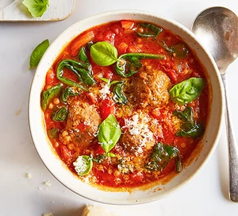

Meatball & Tomato Soup

Description
Get three of your 5-a-day in one serving with this healthy, low-calorie tomato soup. The addition of meatballs and giant couscous means it's filling, too
Ingredients
- 1.5 tbsp rapeseed oil
- 1 onion, finely chopped
- 2 red peppers, deseeded and sliced
- 1 garlic clove, crushed
- 0.5 tsp chilli flakes
- 2 x 400g cans chopped tomatoes
- 100g giant couscous
- 500ml hot vegetable stock
- 12 port meatballs
- 150g baby spinach
- 0.5 samll bunch of basil
- grated parmesan, to serve
Steps
- Heat the oil in a saucepan. Fry the onion and peppers for 7 mins, then stir through the garlic and chilli flakes and cook for 1 min. Add the tomatoes, giant couscous and veg stock and bring to a simmer.
- Season to taste, then add the meatballs and spinach. Simmer for 5-7 mins or until cooked through. Ladle into bowls and top with the basil and some parmesan, if you like.